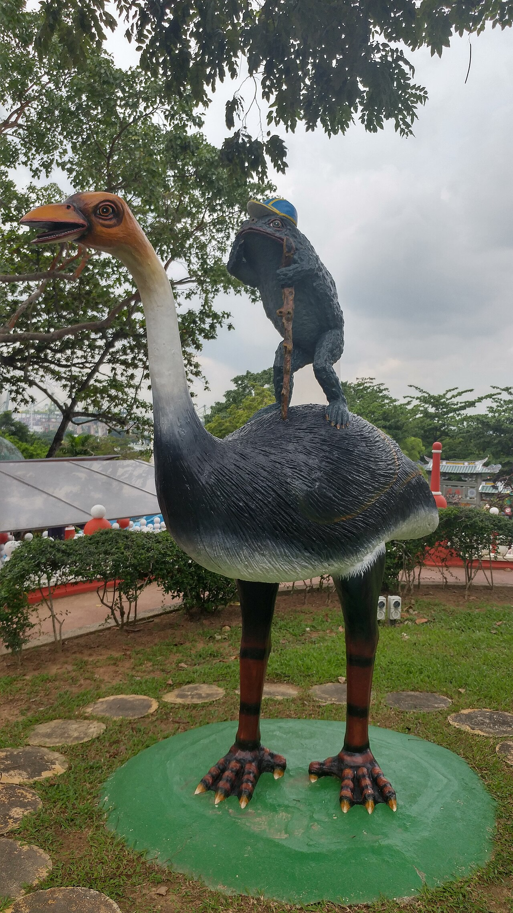
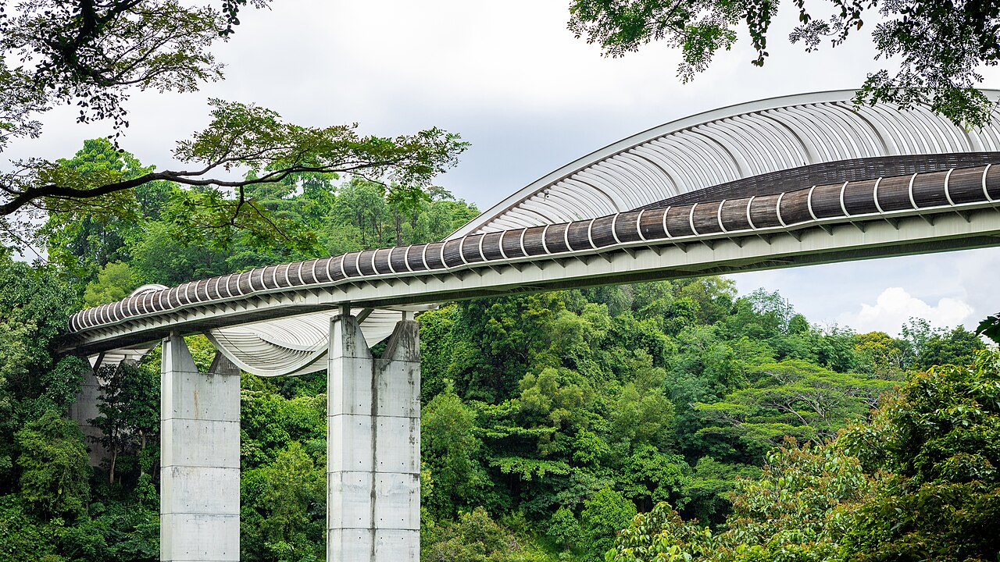
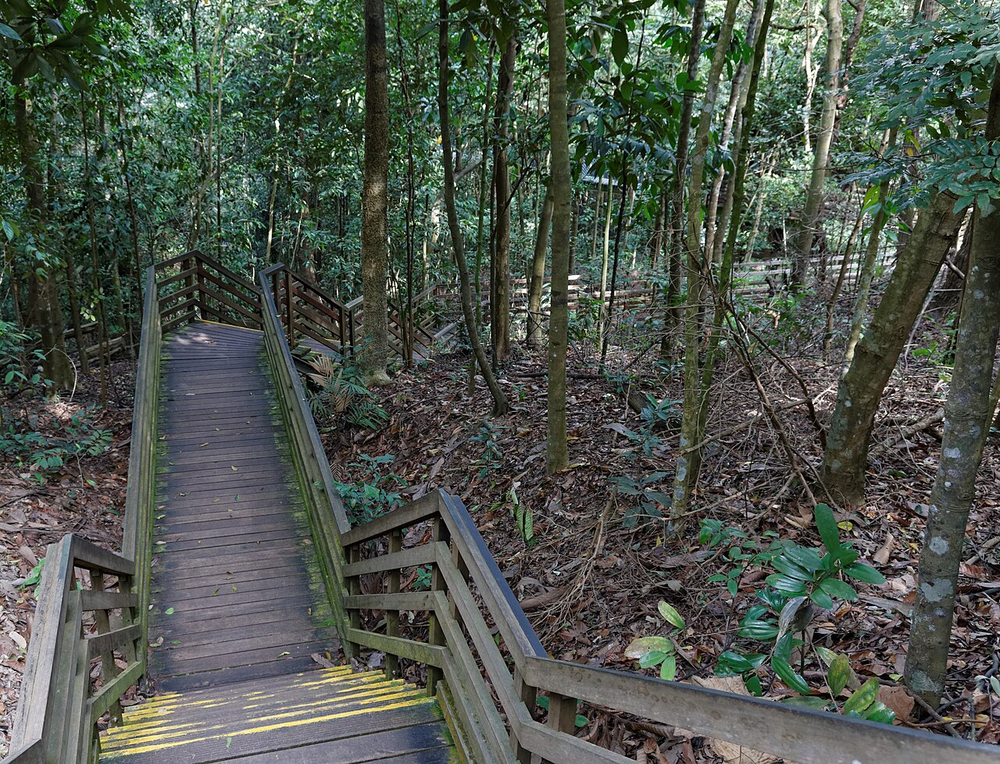
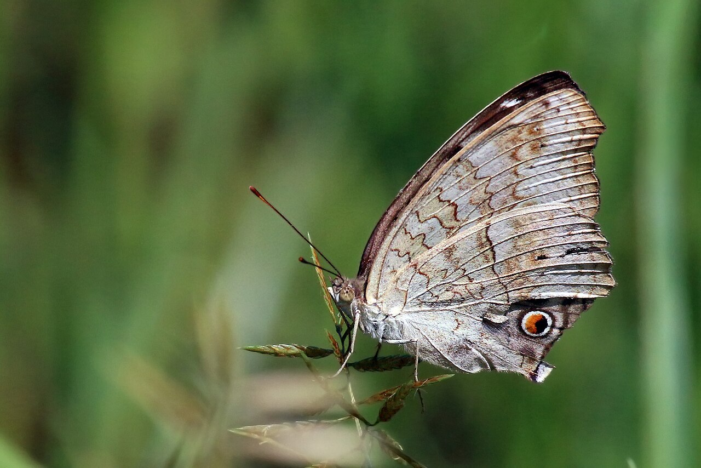
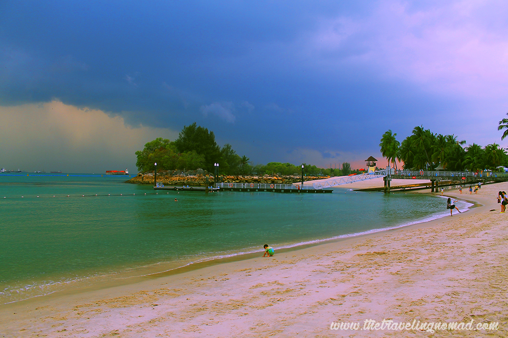

€14Hell's Mus.
SWsince 1937
A gloriously kitsch 1937 park of 1,000+ statues and dioramas of Chinese mythology (free); the paid Hell's Museum houses the lurid Ten Courts of Hell. Park partially closed for works from Dec 2025 — Museum stays open. [34][35]
📮 park free · walk-up
⚠ If time

0€free
Sthn Ridges10 km
Southern Ridges
A 10 km elevated park trail; the wave-form Henderson Waves (36 m, Singapore's highest pedestrian bridge) and Mount Faber give free panoramas of city, harbour and islands. Ride the cable car down to Sentosa. [36][37]
📮 no ticket · go early or after 5pm
⚠ If time

0€free
Centralcanopy
A free 250 m suspension bridge at jungle-canopy level (long-tailed macaques en route). Open Tue–Sun, closed Mondays — go before 10am to beat the heat. [38][39]
📮 no ticket · closed Mon
⚠ If time

€2.80each way
NE islandbumboat
Singapore's last surviving kampong — rent a bike and ride dirt tracks past wooden houses to the Chek Jawa wetlands boardwalk (best at low tide). 10-min bumboat from Changi Point; departs once 12 passengers board. [40][42]
📮 on-demand boat · boardwalks 07:00–19:00
⚠ If time
€12ferry rt
S islandsquiet sand
Southern Islands
For an empty beach: ferry from Marina South Pier to St John's, then walk the causeway to Lazarus Island's quiet sand; Kusu adds a temple and tortoise sanctuary. [47]
📮 book ahead on weekends
⚠ If time

0€most sights
Sentosatouristy
Skip the paid theme parks for the free ones: the Fort Siloso Skywalk (WWII coastal fort, lift up), Palawan Beach's suspension bridge to the "southernmost point of continental Asia," and a free beach shuttle tram. [44][43]
📮 walk in via the boardwalk
⚠ If time